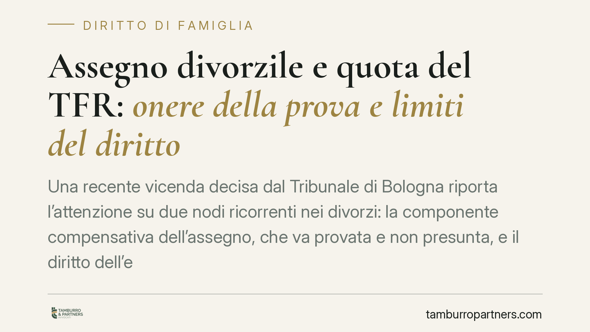

Assegno divorzile e quota del TFR: onere della prova e limiti del diritto
Una recente vicenda decisa dal Tribunale di Bologna riporta l'attenzione su due nodi ricorrenti nei divorzi: la componente compensativa dell'assegno, che va provata e non presunta, e il diritto dell'ex coniuge a una quota del TFR. Comprendere quando quel diritto sorge, e come si calcola, è decisivo per impostare correttamente la domanda.

Il caso in sintesi
Secondo quanto riportato dalla stampa specializzata, il Tribunale di Bologna, Sez. I Civile, ha ridotto l'assegno divorzile riconosciuto all'ex moglie a 1.000 euro mensili, escludendo la componente cosiddetta compensativa per mancata prova del sacrificio professionale subito durante il matrimonio. Il Tribunale avrebbe inoltre negato il riconoscimento della quota del TFR maturato dall'ex marito.
Gli estremi completi della pronuncia (numero e data) sono in corso di verifica. Trattiamo quindi la vicenda come spunto per chiarire i principi applicabili, senza attribuire alla decisione affermazioni che non risultino confermate dal testo integrale.
La duplice natura dell'assegno divorzile
L'assegno divorzile è disciplinato dall'art. 5, comma 6, della Legge 898/1970. Le Sezioni Unite della Cassazione (sent. n. 18287/2018) ne hanno chiarito la funzione: non solo assistenziale, ma anche perequativo-compensativa.
In concreto significa che l'assegno può riconoscere all'ex coniuge economicamente più debole non soltanto il sostegno per un'esistenza dignitosa, ma anche il valore del contributo dato alla famiglia e al patrimonio comune, specie quando uno dei due abbia rinunciato a occasioni professionali per dedicarsi alla casa o ai figli.
Il punto cruciale è probatorio: la componente compensativa non si presume. Chi la invoca deve dimostrare il sacrificio, il nesso tra la rinuncia e le scelte condivise, e l'incremento reddituale o patrimoniale conseguito dall'altro coniuge grazie a quella rinuncia. In assenza di prova, il giudice riconosce la sola componente assistenziale, con un importo inevitabilmente più contenuto.
La quota del TFR: come funziona davvero
Su questo profilo occorre precisione, perché circolano letture imprecise.
L'art. 12-bis della Legge 898/1970 attribuisce al coniuge titolare dell'assegno divorzile, che non sia passato a nuove nozze, una quota pari al 40% dell'indennità di fine rapporto percepita dall'altro coniuge. Tale quota è calcolata con riferimento agli anni in cui il rapporto di lavoro è coinciso con il matrimonio.
Due condizioni vanno tenute distinte:
- Percezione dell'assegno divorzile: il diritto alla quota del TFR spetta solo a chi è titolare dell'assegno.
- Momento della maturazione dell'indennità: la giurisprudenza consolidata riconosce la quota quando l'indennità è percepita anche dopo la domanda di divorzio.
È quindi tecnicamente scorretto affermare, in via generale, che rilevi soltanto il TFR maturato "fino al deposito della domanda" e che le somme accantonate prima non entrino nel calcolo. Il meccanismo è diverso: si guarda agli anni di coincidenza tra rapporto di lavoro e matrimonio, non a un taglio temporale legato alla domanda.
Se il Tribunale di Bologna avesse effettivamente negato la quota, la ragione più probabile va cercata nelle condizioni sostanziali del caso concreto — ad esempio il difetto di uno dei presupposti — e non in una regola generale di esclusione. Fino alla lettura della motivazione, si tratta di un'ipotesi da trattare con cautela.
Cosa cambia per chi affronta un divorzio
Due indicazioni emergono con chiarezza.
La prima: chi punta a un assegno che valorizzi il proprio contributo familiare deve preparare la prova, non limitarsi ad allegarla. La rinuncia professionale va documentata e collegata alle scelte di coppia.
La seconda: il diritto alla quota del TFR non è automatico né si legge "a spanne". Va ricostruito sulla base degli anni di coincidenza lavoro-matrimonio e dei presupposti di legge.
Cosa fare in concreto
- Ricostruisci la storia lavorativa tua e del coniuge: raccogli buste paga, contratti, lettere di assunzione o di cessazione, periodi di aspettativa o dimissioni.
- Documenta il sacrificio professionale: conserva prove di offerte di lavoro rifiutate, percorsi di carriera interrotti, spostamenti dettati dalle esigenze familiari.
- Verifica i presupposti per la quota del TFR: accerta la titolarità dell'assegno divorzile e calcola gli anni di coincidenza tra rapporto di lavoro e matrimonio.
- Non affidarti a formule generiche: fatti chiarire in sede difensiva come il criterio del 40% si applica al tuo caso specifico.
- Consigliamo di agire per tempo: la raccolta documentale è più efficace se avviata prima del deposito della domanda.
Ogni famiglia ha il suo equilibrio.
Separazione, divorzio, affidamento, assegno: se vuoi un confronto riservato su una specifica situazione, scrivi allo studio. Ti rispondiamo entro un giorno lavorativo.